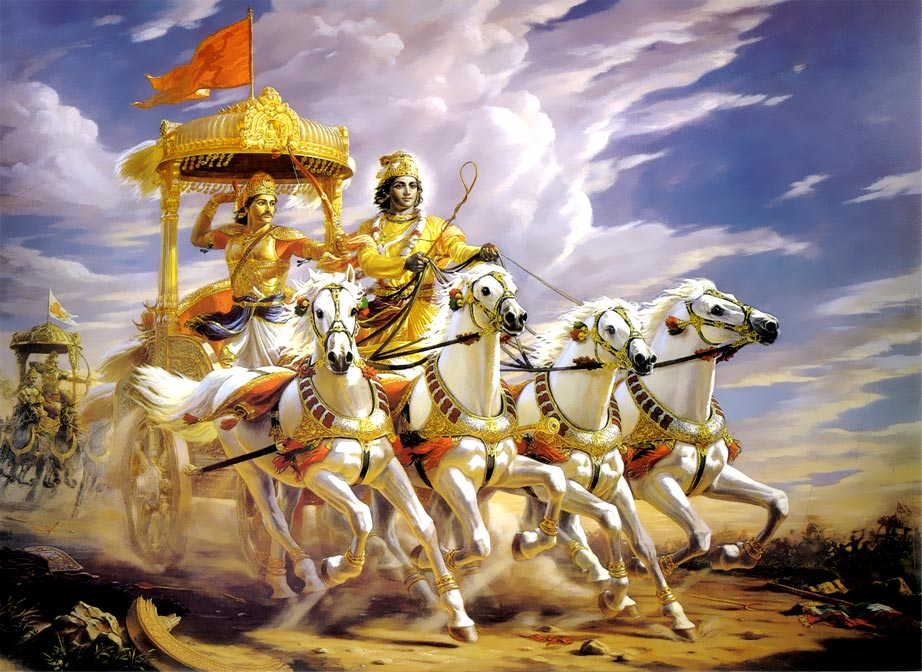

“Arjuna –dijo Krishna- quiero que luches esta guerra, para que tu y tus hermanos gobiernen el reino con amor y sabiduría. Mas después de haber escuchado todo lo que te he dicho, mira en tu corazón y decide que es lo mejor, si luchar o no.”
“Mi querido Krishna -dijo Arjuna- ya no estoy mas confundido ni triste, por el contrario estoy dispuesto a luchar y hacer lo que Tu me digas.”